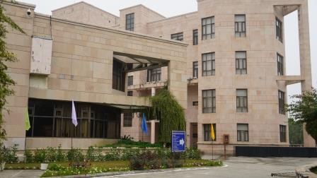

DeepSeek Creates Waves on the Internet!
In a world brimming with information, DeepSeek AI emerges as a game-changer, setting new standards for intelligent search and discovery. Unlike traditional search engines, DeepSeek AI goes beyond keywords, harnessing the power of advanced artificial intelligence to understand intent, context, and nuance, delivering results that feel almost human-curated.
Built on state-of-the-art natural language processing (NLP) and generative AI models, DeepSeek AI is designed to transform the way we interact with information. Whether you’re a researcher seeking deep insights, a student solving complex problems, or an entrepreneur exploring business strategies, DeepSeek AI intuitively tailors its responses to fit your needs.
One of its standout features is "DeepDive Mode", which doesn’t just answer your query—it builds an interconnected web of information, giving users a broader perspective and deeper understanding of their topic. Additionally, the platform includes "Conversational Search," allowing users to refine queries naturally, as if engaging in a discussion with an expert.
DeepSeek AI also emphasizes personalization, learning from user behavior to prioritize content that aligns with individual preferences. With robust data privacy measures, users can explore freely, knowing their interactions are secure.
Already gaining traction in industries like academia, healthcare, and business intelligence, DeepSeek AI is being hailed as a tool that not only finds answers but sparks new ideas. Its mission is clear: to empower seekers with faster, smarter, and more meaningful access to the world’s knowledge.
Whether you’re solving a mystery, uncovering trends, or simply satisfying your curiosity, DeepSeek AI ensures that every journey for knowledge is smarter and more rewarding.
Because in the pursuit of understanding, DeepSeek AI doesn’t just search—it seeks.

Israel Palestine Truce
In a significant development, Israel and Palestine have agreed to a temporary truce following weeks of escalating violence that has claimed numerous lives and caused widespread devastation. The ceasefire, brokered through international mediation, aims to halt the ongoing clashes and provide a much-needed pause to allow humanitarian aid and support to reach affected regions.
The truce, while being hailed as a positive step, has been met with cautious optimism. Both sides have expressed a commitment to de-escalate tensions and refrain from further military actions for the duration of the ceasefire. However, experts remain wary, noting that the underlying issues, including disputes over land, borders, and the status of Jerusalem, remain unresolved.
In Gaza, the ceasefire has brought some relief to civilians who have been caught in the crossfire. Emergency aid has begun to flow into the region, with medical supplies and food being distributed to those in need. Similarly, Israel has taken steps to ease restrictions and allow for the movement of people and goods across borders, though security concerns remain high.
While both Israeli and Palestinian leaders have expressed a willingness to explore long-term peace talks, the truce has been fragile, with sporadic violence reported even during its early stages. International bodies, including the United Nations and the European Union, have called for continued dialogue and negotiation to address the root causes of the conflict.
For many, the truce represents a brief moment of hope, but the path to lasting peace remains uncertain. As the situation evolves, all eyes are on the region, with the world watching to see whether this temporary ceasefire can lay the groundwork for a more permanent solution.

IIIT Allahabad Conducts Back Paper Exam
In an effort to support students who have struggled with their academic performance, IIIT Allahabad has announced the conduction of back paper exams for those who have failed in one or more courses. These exams provide an opportunity for affected students to clear their backlogs and progress with their academic journey.
The back paper exams, which are scheduled to take place in February 2025, will cover courses from both the current semester and previous ones. The administration has made special provisions to ensure a smooth examination process, including extended exam schedules and additional support for students who require accommodations due to medical or personal circumstances.
The decision comes after requests from students and faculty to provide a fair chance for those who faced challenges during the semester, whether due to personal issues, health-related matters, or the academic pressure of online learning. With the exams being held in a hybrid format—both online and offline—students will have the flexibility to choose their mode of participation.
The university is emphasizing the importance of preparation and discipline, encouraging students to utilize the extra time productively to clear their backlogs. Additionally, counseling and academic assistance services have been made available to students who need help with revision or managing exam-related stress.
While the back paper exams may add pressure, they also offer a fresh opportunity for students to improve their academic standing and move forward in their degree programs. The university has reassured students that all necessary safety protocols will be in place for those taking the exams on campus.
For many, the back paper exams represent a chance to overcome hurdles and continue their academic journey without delays.
../images/download.jpeg
Trump says India 'will do what's right' on illegal immigration
US President Donald Trump has said India "will do what's right" on the deportation of illegal migrants following a phone call with Prime Minister Narendra Modi.
The leaders spoke on Monday, their first conversation since Trump's inauguration last week. They discussed immigration, security issues, and trade in what the White House described as a "productive call". Trump told reporters after the call that Modi was likely to visit the United States "sometime in February".
Since taking office on 20 January, Trump has announced a number of immigration-related executive orders, paving the way for a widespread effort to crack down on undocumented migrants in the US.
According to the Pew Research Center, there are an estimated 725,000 undocumented Indian immigrants in the US as of 2024. Last week, India's foreign ministry said Delhi would take in Indians overstaying "anywhere in the world" as long as their documents were shared and nationality was verified.
In their phone call on Monday, the ministry said, Trump and Modi discussed the bilateral relationship, "including in the areas of technology, trade, investment, energy and defence".
The two leaders also discussed security in the Indo-Pacific, the Middle East, and Europe. According to a White House statement, Trump emphasised the importance of India increasing its procurement of US-made security equipment and moving towards a "fair" bilateral trading relationship.
In a post on X (formerly Twitter), Modi called Trump a "dear friend" and said they were "committed to a mutually beneficial and trusted partnership". The White House said both leaders emphasised their commitment to advancing their countries' strategic partnership and the Indo-Pacific Quad partnership, which also includes Japan and Australia. India will be hosting Quad leaders for the first time later this year.
Modi and Trump shared cordial relations during the US president's first term between 2017 and 2021. But India faced a bitter tariff war with the Trump administration that affected businesses on both sides.
In November, following Trump's election victory, India's Foreign Minister S. Jaishankar said the country was not nervous about working with the US president. Trump had called Modi a "great leader" last year but also accused India of charging excessive tariffs. Analysts say it will be interesting to watch if the bonhomie between the two will help overcome concerns about trade and immigration.
The leaders spoke on Monday, their first conversation since Trump's inauguration last week. They discussed immigration, security issues, and trade in what the White House described as a "productive call". Trump told reporters after the call that Modi was likely to visit the United States "sometime in February".
Since taking office on 20 January, Trump has announced a number of immigration-related executive orders, paving the way for a widespread effort to crack down on undocumented migrants in the US.
According to the Pew Research Center, there are an estimated 725,000 undocumented Indian immigrants in the US as of 2024. Last week, India's foreign ministry said Delhi would take in Indians overstaying "anywhere in the world" as long as their documents were shared and nationality was verified.
In their phone call on Monday, the ministry said, Trump and Modi discussed the bilateral relationship, "including in the areas of technology, trade, investment, energy and defence".
The two leaders also discussed security in the Indo-Pacific, the Middle East, and Europe. According to a White House statement, Trump emphasised the importance of India increasing its procurement of US-made security equipment and moving towards a "fair" bilateral trading relationship.
In a post on X (formerly Twitter), Modi called Trump a "dear friend" and said they were "committed to a mutually beneficial and trusted partnership". The White House said both leaders emphasised their commitment to advancing their countries' strategic partnership and the Indo-Pacific Quad partnership, which also includes Japan and Australia. India will be hosting Quad leaders for the first time later this year.
Modi and Trump shared cordial relations during the US president's first term between 2017 and 2021. But India faced a bitter tariff war with the Trump administration that affected businesses on both sides.
In November, following Trump's election victory, India's Foreign Minister S. Jaishankar said the country was not nervous about working with the US president. Trump had called Modi a "great leader" last year but also accused India of charging excessive tariffs. Analysts say it will be interesting to watch if the bonhomie between the two will help overcome concerns about trade and immigration.


../images/GiV8dBKaEAAGUVW.jpg
ISRO set for a historic 100th launch from Sriharikota
The Indian Space Research Organisation (ISRO) is gearing up for its historic 100th mission, scheduled for launch on January 29, 2025, at 6:23 AM IST from the Satish Dhawan Space Centre in Sriharikota. This milestone mission will see the Geosynchronous Satellite Launch Vehicle (GSLV-F15) deploying the NVS-02 satellite, a second-generation addition to India's Navigation with Indian Constellation (NavIC) system.
The NVS-02 satellite is designed to enhance India's regional navigation capabilities, offering improved accuracy and coverage. Notably, this launch marks the first mission under the leadership of ISRO's new Chairman, V. Narayanan, who assumed office on January 13, 2025.
The GSLV-F15 mission represents the 17th flight of the GSLV series and the 11th utilizing the indigenously developed cryogenic engine, underscoring India's advancements in space technology.
The countdown for this landmark mission commenced 27 hours prior to the scheduled liftoff, with all systems undergoing final checks to ensure a successful launch. The NVS-02 satellite is expected to significantly bolster India's navigation infrastructure, providing a range of applications across various sectors.
As the nation anticipates this significant event, the successful deployment of NVS-02 will further solidify ISRO's reputation for excellence in space exploration and technology.
../images/117622684.webp
Union Budget 2025: Middle-Class Hopes Rise Amid Calls for Income Tax Reforms
As the Union Budget 2025 approaches, there is significant anticipation regarding potential changes in India's income tax structure. Taxpayers, particularly from the middle class, are hopeful for adjustments that could alleviate the financial pressures they face. The current 30% tax bracket is perceived as burdensome, reducing disposable income and making it challenging to manage rising living costs. Many are optimistic that the upcoming budget will address these concerns by revising tax slabs or introducing relief measures.
In the lead-up to the budget announcement, various stakeholders have proposed initiatives aimed at economic stimulation and social welfare. For instance, the State Bank of India (SBI) has recommended the implementation of a Universal Income Scheme and comprehensive tax reforms. Such proposals are designed to bolster economic growth and provide a safety net for vulnerable populations.
Additionally, recent data indicates a significant increase in the number of individuals filing zero-income tax returns, which has more than doubled in recent years. This trend highlights the need for a more inclusive and equitable tax system that broadens the tax base while ensuring fairness.
As the budget date approaches, all eyes are on the government's fiscal strategies and their potential impact on taxpayers across the nation.
../images/mahakumbh.avif
Mahakumbh 2025: The World's Largest Spiritual Gathering Set to Begin in Prayagraj
The highly anticipated Mahakumbh 2025, the largest spiritual and cultural gathering in the world, is set to commence in Prayagraj, Uttar Pradesh. Held every 12 years, this event is expected to attract millions of devotees, ascetics, and tourists from across the globe. The Mahakumbh is a celebration of faith, spirituality, and cultural heritage, with its origins rooted in ancient Hindu traditions.
The 2025 edition promises to be grander than ever, with the Uttar Pradesh government announcing extensive preparations to accommodate the anticipated crowd. Authorities have allocated significant resources to improve infrastructure, including temporary shelters, sanitation facilities, transportation networks, and safety measures. The iconic confluence of the Ganga, Yamuna, and the mythical Saraswati rivers, known as the Triveni Sangam, will serve as the focal point for ritualistic bathing, which is believed to cleanse sins and lead to salvation.
A key highlight of Mahakumbh 2025 will be the Shahi Snan (royal bath), where revered sadhus and saints from various Akharas (monastic orders) take the ceremonial dip in the holy waters. Apart from its religious significance, the event will showcase cultural programs, traditional music and dance, and an exhibition of India's spiritual diversity.
To enhance the experience for international visitors, the government is focusing on multilingual guides, digital booking systems, and promoting eco-friendly practices. Security will be a top priority, with thousands of police personnel and volunteers deployed to ensure a safe and peaceful event.
Mahakumbh 2025 is not just a religious festival but a celebration of India's timeless culture and unity in diversity, making it a must-visit for devotees and travelers alike.
../images/vedanta.avif
Vedanta 2025: A Global Conclave on India's Journey Towards Sustainable Development
Vedanta 2025, the much-anticipated global summit focusing on India’s role in sustainable development and technological innovation, is set to take place this year. Organized by key stakeholders in science, technology, and environmental policy, the event aims to bring together thought leaders, policymakers, industry experts, and researchers to discuss strategies for balancing economic growth with ecological preservation.
The theme for Vedanta 2025, "Sustainability in Action: India Leading the Way," reflects the nation’s ambition to pioneer green technologies and practices. The summit will feature keynote addresses, panel discussions, and workshops on topics such as renewable energy, green manufacturing, water resource management, and achieving net-zero emissions.
Notably, Vedanta 2025 will host a showcase of cutting-edge innovations from startups and corporations that align with sustainable development goals. This includes advancements in solar and wind energy, waste recycling technologies, and AI-driven solutions for optimizing resources.
The event will also highlight India’s cultural heritage, showcasing how ancient practices and philosophies like yoga and Ayurveda can contribute to modern sustainability efforts. Global delegates will have the opportunity to experience these traditions firsthand, emphasizing the importance of holistic approaches to well-being and environmental harmony.
Vedanta 2025 is expected to foster collaborations between international and domestic entities, driving investments and partnerships in green initiatives. With India emerging as a global leader in sustainability, the summit is a significant step toward achieving a future where progress and preservation coexist.
This year’s Vedanta is not just a conference but a call to action for individuals, organizations, and governments to work together for a sustainable and inclusive world.
../images/deepseek.webp
DeepSeek AI: The Next-Gen Search Engine Revolutionizing How We Discover Information
In a world brimming with information, DeepSeek AI emerges as a game-changer, setting new standards for intelligent search and discovery. Unlike traditional search engines, DeepSeek AI goes beyond keywords, harnessing the power of advanced artificial intelligence to understand intent, context, and nuance, delivering results that feel almost human-curated.
Built on state-of-the-art natural language processing (NLP) and generative AI models, DeepSeek AI is designed to transform the way we interact with information. Whether you’re a researcher seeking deep insights, a student solving complex problems, or an entrepreneur exploring business strategies, DeepSeek AI intuitively tailors its responses to fit your needs.
One of its standout features is "DeepDive Mode", which doesn’t just answer your query—it builds an interconnected web of information, giving users a broader perspective and deeper understanding of their topic. Additionally, the platform includes "Conversational Search," allowing users to refine queries naturally, as if engaging in a discussion with an expert.
DeepSeek AI also emphasizes personalization, learning from user behavior to prioritize content that aligns with individual preferences. With robust data privacy measures, users can explore freely, knowing their interactions are secure.
Already gaining traction in industries like academia, healthcare, and business intelligence, DeepSeek AI is being hailed as a tool that not only finds answers but sparks new ideas. Its mission is clear: to empower seekers with faster, smarter, and more meaningful access to the world’s knowledge.
Whether you’re solving a mystery, uncovering trends, or simply satisfying your curiosity, DeepSeek AI ensures that every journey for knowledge is smarter and more rewarding.
Because in the pursuit of understanding, DeepSeek AI doesn’t just search—it seeks.
../images/share-market.webp
Share Market 2025: Trends to Watch and Tips for Smart Investing
The share market continues to be a dynamic and exciting space in 2025, with opportunities for growth across various sectors. As technology reshapes industries and global economic shifts create new challenges, investors are keen to identify emerging trends and make informed decisions.
One of the key themes this year is the rise of green stocks, with companies focusing on renewable energy, electric vehicles, and sustainability gaining significant attention. With governments around the world ramping up climate action, these stocks are expected to deliver substantial returns over the long term.
Another major trend is the expansion of AI-driven industries, particularly in sectors like healthcare, finance, and automation. Companies leveraging AI for innovation and efficiency are attracting both institutional and retail investors. The tech sector as a whole remains a hotbed of activity, with IPOs and mergers drawing attention globally.
In India, the market is experiencing a surge in participation from retail investors, driven by digital trading platforms and increased financial literacy. This trend has led to greater liquidity and opportunities in mid-cap and small-cap stocks. At the same time, traditional sectors such as banking and FMCG continue to perform steadily, making them a reliable choice for conservative investors.
Experts recommend a diversified portfolio to navigate the share market in 2025. While growth stocks remain attractive, a balanced approach with exposure to value stocks and fixed-income instruments can mitigate risks. Staying informed about geopolitical events, monetary policies, and quarterly earnings reports is crucial for making timely investment decisions.
For first-time investors, Systematic Investment Plans (SIPs) in equity mutual funds offer a disciplined approach to entering the market. Meanwhile, seasoned traders are keeping a close eye on international indices and cryptocurrency trends, as global market movements influence domestic equities.
As always, the golden rule for the share market is patience and research. While the market can be unpredictable in the short term, a long-term perspective, combined with a well-researched strategy, is the key to building wealth.
Remember, the share market is not just about timing—it’s about time in the market. So, invest wisely and let your money grow! 📈
../images/land-acquisition-bengal.webp
Land Acquisition in Bengal 2025: Government Plans and Local Concerns
Land acquisition has remained a contentious issue in West Bengal, with both governmental ambitions and local concerns shaping the ongoing discourse. As the state gears up for further industrialization and urbanization in 2025, the government has outlined new initiatives aimed at acquiring land for infrastructure projects, industrial parks, and housing developments. However, these efforts continue to spark debates about fairness, compensation, and the impact on local communities.
The West Bengal government has focused on large-scale infrastructure projects such as new roads, bridges, and smart city initiatives, which require substantial land acquisition. The aim is to boost economic growth, create jobs, and attract investments. In this context, land acquisition is often seen as necessary for modernization, but it raises significant challenges related to the displacement of residents, particularly in rural areas.
In response, the state has introduced policies meant to streamline land acquisition processes, such as offering compensation packages that include both financial payment and resettlement options for displaced families. However, many local communities and activists remain skeptical, fearing that the compensation might not be sufficient to address the long-term displacement and loss of livelihoods.
Another key issue is the growing tension between agriculture and industry. Bengal, traditionally an agrarian state, faces a delicate balance between maintaining agricultural output and fostering industrial development. Land acquisition for industrial projects often leads to a reduction in arable land, exacerbating concerns about food security and the livelihoods of farming families.
In 2025, local protests and demands for greater transparency and accountability in the land acquisition process are expected to intensify. Activists are calling for more community involvement in the decision-making process, ensuring that the voices of the affected populations are heard and that their rights are protected.
On the other hand, proponents of industrialization argue that land acquisition is a necessary step for economic growth, which will eventually benefit the people of Bengal through job creation, infrastructure improvements, and increased prosperity.
As the debate over land acquisition in Bengal continues to unfold, it remains to be seen how the government will balance the needs of development with the rights of its citizens. What is clear is that 2025 will be a pivotal year for shaping the future of land acquisition policies in the state.
../images/sak.avif
Saif Ali Khan Returns Home After Hospital Recovery Following Stabbing Incident
Bollywood actor Saif Ali Khan has returned to his Mumbai residence after a successful recovery from the shocking stabbing incident that occurred on January 16, 2025. The actor, who was attacked during a home invasion at his Bandra property, underwent emergency surgery for injuries sustained to his spine. Following a period of intensive care, Khan is now reported to be in stable condition and is recuperating at home.
The attack, which left Khan with multiple stab wounds, including a serious injury to his back and neck, has raised concerns about safety among high-profile celebrities. Despite the traumatic experience, Khan has shown great resilience, and doctors have confirmed that he is expected to make a full recovery with proper rest and care.
The police investigation into the incident is ongoing, with authorities working to identify and apprehend the attacker. Early reports suggest that the invasion might have been facilitated by an insider, adding to the complexity of the case.
Fans of the actor have expressed relief and support as Khan begins his recovery at home, and many are eagerly awaiting his return to public life once he is fully healed.